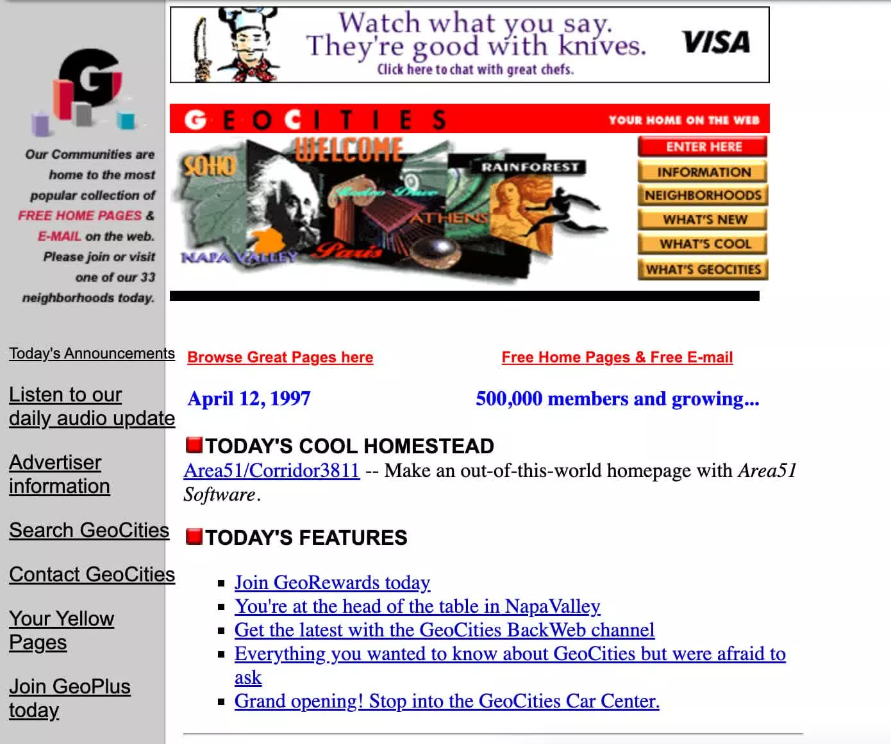

"One Terabyte of Kilobyte Age" is a project by artists Olia Lialina and Dragan Espenschied that focuses on the preservation and restoration of websites from GeoCities, a platform from the early internet known for its amateur web practices. GeoCities, founded in 1994, offered free web hosting in exchange for serving banner ads and was nearly lost when it closed in 2009.
Lialina and Espenschied work with the GeoCities archive, generating screenshots of these old web pages and exploring the cultural value of "Digital Folklore." Their work highlights the importance and beauty of the evolving vernacular created by users during the early days of the internet.